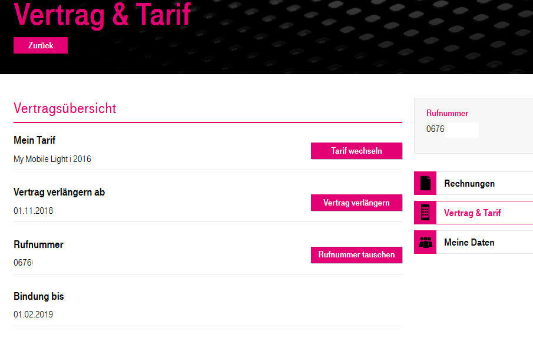

Ich bin Besitzer von 2 Handyverträgen von T-Mobile, einer längeren Neuanmeldung und einer Zusatzanmeldung. Ich bin mit beiden Tarifen zufrieden, nur würde ich gerne die beiden Rufnummer, die ich besitze, mit den Tarifen wechseln. Ist es möglich, dass ich von 2 Verträgen nur die Rufnummern 'auswechsle' oder muss dies anders geregelt werden?
Danke im Vorraus!
mfg
MarioM
Hello,
Wie meinst du denn auswechseln?
Du sagst, du würdest für beide Verträge gerne den Tarif wechseln und die Rufnummer beibehalten? Aber irgendwie willst du dann nur eine Rufnummer auswechseln?
Das verstehe ich jetzt nicht ganz
Lg
s.fabian7
Danke schonmal für die rasche Antwort!
Also ich möchte beide Verträge behalten nur möchte ich die Rufnummern der Verträge tauschen.Sprich, alle Verträge bleiben gleich nur die Rufnummern der Verträge würde ich gerne intern wechseln. Ich tu mir leider selber schwer, das Problem in Worte zu fassen und hoffe auf Ihre Antwort!
mfg
MarioM
Alles klar, jetzt verstehe ich was du meinst.
Wenn du dich unter
https://mein.t-mobile.at/
anmeldest und dann auf Vertrag & Tarif gehst, solltest du einen Punkt sehen der "Rufnummer tauschen" heißt.
Schaue mal ob du das findest und ob das dein Problem löst
Lg
Stoffii
Hallo Fabian,
ich glaub das was du vor hast, geht leider nicht.
Du kannst je Rufnummer schauen, ob ein Tarifwechsel auf einen aktuellen Tarif, der vielleicht sogar mehr Leistung dabei hat, wechseln kannst.
Oder wie von
@MarioM
erwähnt, könntest du die Rufnummer tauschen, dann bekommst du aber entweder einmal bzw. zweimal eine neue Rufnummer. Die SIM-Karte müsstest dann eben intern halt wechseln.
leider ist das was du machen möchtest nicht so einfach möglich. Welche Tarife hast du denn bei den jeweiligen Rufnummern? (Ohne die Rufnummen zu schreiben
)
LG Dan
Mipo
Am 22.7.2017 um 08:18 schrieb s.fabian7:
Ich bin mit beiden Tarifen zufrieden, nur würde ich gerne die beiden Rufnummer, die ich besitze, mit den Tarifen wechseln.
Beides kann über das Kundenportal gemacht werden. Einfach auf Vertrag und Tarif gehen, dann findest du gleich online den Rufnummerntausch.

Auf Rufnummer tauschen klicken und eine Nummer aussuchen.
Das ist nicht an den Tarif oder die Bindung gekoppelt. Beides kann unabhängig gemacht werden. Der alte Tarif kann also bleiben.
s.fabian7
Vielen Dank, für die Antworten!
Ich habe bereits eine alternative gefunden, mit der ich zufrieden bin.
mfg
Mipo
Welche Alternative hast du gefunden?
s.fabian7
Nach einen Live-Chat mit T-Mobile und einen persönlichen Gespräch, wurde mir gesagt, dass dies auf keinen Fall möglich sei! Nun benutze ich halt nur eine Nummer/Tarif und eine Rufumleitung!
Nicht ganz das Ergebnis, welches ich mir erhofft habe, aber naja was solls!